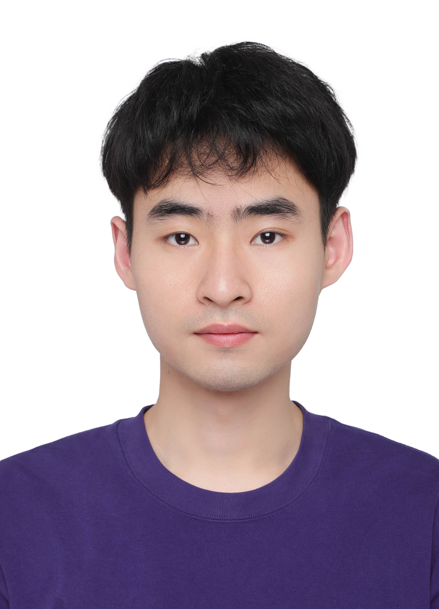

☰
About
Publications
People
People
Research Fellows
Dr. Xinfeng Li
Co-supervised with Xiaofeng Wang
Nov 2024 – Present
(PhD, Zhejiang University)
Dr. Lixu Wang
Jan 2025 – Present
(PhD, Northwestern University)
Dr. Peizhuo Lv
Co-supervised with Xiaofeng Wang & Tianwei Zhang
Mar 2025 – Present
(PhD, Chinese Academy of Sciences)
PhD Students
Yihua Hu
Aug 2024 – Present
(MS, Columbia University)
Xinghe Chen
Aug 2024 – Present
(MS, Columbia University)

Fahong Zhang
Aug 2025 – Present
(MS, XJTU)
Visiting Students
Xiaojia Xu
, Jan 2025 – Present (Renmin University of China)
Feng Wang
, Apr 2025 – Present (Beihang University)
Jiarui Yuan
, Jul 2025 – Present (Eastsouth University)
Hongkun Yang
, Jul 2025 – Present (Ocean University of China)
Alumni
Kai Chen
(Visiting PhD), Apr 2025 – Jul 2025 (Nanjing University)